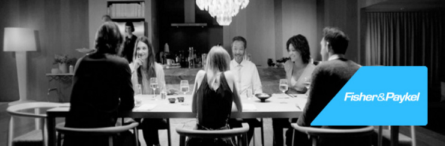

斐雪派克进入斐雪派克网站
斐雪派克从 1934 年开始设计产品，并逐渐成长为一个在 50 个国家/地区运营的全球性公司，其生产基地遍布新西兰、中国、泰国、墨西哥和意大利。我们的设计传承自不懈进取的开创精神和求知求新的企业文化，敢于挑战传统的电器设计，不断推出根据用户需求而量身打造的产品。
我们的传统就是确保当前开发的产品符合可持续设计的基本原则，同时又着眼于未来。我们致力于不断地研发新产品。在开放创新的企业文化指引下，我们的员工通力协作，以独到的想法和创意实现与客户的心意相通并确保我们的产品绿色环保。
海尔集团在 2012 年收购了斐雪派克。加入这样一家大型全球化企业有诸多优势，而我们母公司的目的就是让斐雪派克以超越以往预期的速度飞速发展。作为一个全球化的高端品牌，斐雪派克将在集团内部继续保持发展步伐。在扩张地方品牌的同时，重点仍将是继续在新西兰、澳大利亚和北美发展斐雪派克和 DCS 品牌，同时扩大我们在中国和印度的品牌影响力。针对这些市场推出的斐雪派克新产品将继续在新西兰的研发中心（已被选为集团在全球的 5 个精英研发中心之一）进行设计。
斐雪派克厨房电器有限公司包含其他子公司：Production Machinery Limited 公司负责制造生产设备，并将提高电机设计能力和生产能力，以适应来自更多组织和其他第三方客户日益增长的需求；Dynamic Cooking Systems Inc 是美国的一家专业级户内和户外烹饪产品的公司，其中一些产品销售于澳大利亚和新西兰；Fisher & Paykel Italy 是一家专门从事欧洲烹饪产品的公司。
进入斐雪派克网站